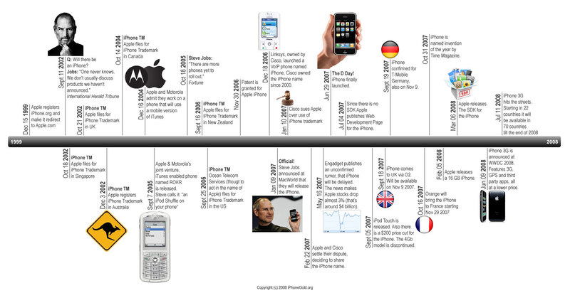

History of Iphone
Iphone

iPhone, series of smartphones produced by Apple Inc., combining mobile telephone, digital camera, music player, and personal computing technologies. After more than two years of development, the device was first released in the United States in 2007. The iPhone was subsequently released in Europe in 2007 and Asia in 2008.
Apple designed its first mobile smartphone to run the Mac OS X operating system, made popular on the company’s personal computers. The device’s most revolutionary element was its touch-sensitive multisensor interface. The touchscreen allowed users to manipulate all programs and telephone functions with their fingertips rather than a stylus or physical keys. This interface—perfected, if not invented, by Apple—recreated a tactile physical experience; for example, the user could shrink photos with a pinching motion or flip through music albums using a flicking motion. The iPhone also featured Internet browsing, music and video playback, a digital camera, visual voicemail, and a tabbed contact list.
The iPhone joined several competing products in the smartphone market, and critics and fans alike noted that it offered few truly original features. The main appeal of the iPhone was its incorporation of intuitive software and a simplified appealing interface, as well as the capacity to accommodate new user-selected software. More than 100 million applications (or “apps”) were downloaded in the first 60 days after Apple opened its online iPhone App Store in 2008, and by January 2010 more than three billion apps had been downloaded from the store.
In 2008, only a year after its debut, Apple released a second version of the iPhone that was updated to use third-generation (3G) wireless technology. As with the original iPhone, demand was high, and the new iPhone 3G sold one million units in the first three days after its introduction. In addition to hardware changes such as a 3-megapixel digital camera that could also record digital videos and an internal digital compass (capable of working with various mapping software), the iPhone 3GS included a new operating system, the iPhone OS 3.0. The new system included support for voice-activated controls and peer-to-peer (P2P) play of electronic games with other iPhone users over Wi-Fi Internet connections. The latter feature was part of Apple’s strategy to compete in the portable gaming market with the Nintendo Company’s DS and the Sony Corporation’s PSP.
Officially unveiled in June 2010, the iPhone 4 was thinner than its predecessor and offered improved battery life as well as a 5-megapixel camera. It featured a front-facing camera for video chat and selfies. The iPhone 4 ran on iOS 4, a multiplatform operating system that allowed users to run multiple apps simultaneously. In October 2011 Apple released the iPhone 4S. Among the improvements were an 8-megapixel camera and Siri, a personal assistant program that responded to spoken commands and questions. The new version of the operating system, iOS 5, contained iMessage, a messaging system that allowed conversations between any devices running iOS 5, and allowed users to store information on Apple’s new cloud-computing service, iCloud.
The iPhone 5, introduced in September 2012, had a taller screen. Improved versions, the 5C and the more expensive 5S, were released in September 2013. The 5S had a fingerprint lock system called Touch ID and a motion coprocessor, which was solely devoted to processing information from the phone’s motion sensors, thus freeing up resources on the main processor.
In September 2014 the iPhone 6 and the larger 6 Plus were unveiled. The 6 Plus was significantly thinner than previous versions (which actually made it susceptible to unintentional bending if left in a user’s pocket too long). The new operating system version, iOS 8, had such features as the ability to suggest words or phrases a user might type next, based on the recipient of the message, and the ability to identify which applications were an excessive drain on battery life.
The iPhone 7 and 7 Plus were released in September 2016. The 7 Plus had a camera with a “portrait mode,” in which a foreground subject was in focus against a blurred background, and a second telephoto camera on the back. In both phones Apple eliminated the headphone jack. Headphones could be connected to the Lightning port on the bottom of the phone. Apple introduced wireless headphones called AirPods that could connect to the iPhone through Bluetooth.
In September 2017 Apple released the iPhone 8 and 8 Plus. The only distinctive feature was the addition of inductive charging, in which the phone could charge wirelessly. Two months later Apple introduced the iPhone X, in which the screen covered the whole front surface of the device. The home button at the bottom of the iPhone was removed, and users no longer used their fingerprint but instead used facial recognition to unlock their phones.
In the late 2010s and early 2020s, new iPhone models concentrated on incremental improvements to the cameras, screen resolution, and processing power. The iPhone 11 Pro and Pro Max (introduced in September 2019) were the first models to have three cameras on the back, the third camera being able to take ultrawide-angle pictures.